Cold open · links submitted between 15:41 and 16:30 SGT
A magic wand. A chemistry lab on the Moon. A motorbike you steer with your head.
These are live websites students built and deployed during the workshop's build hour, with a laptop camera, a browser and AI coding tools. Every caption links to the project. 49:14
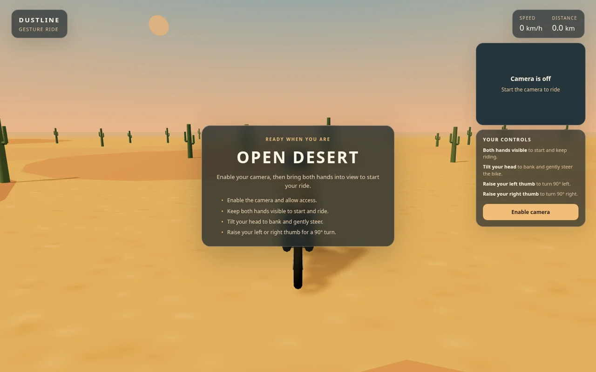
Screenshot · 22 Nov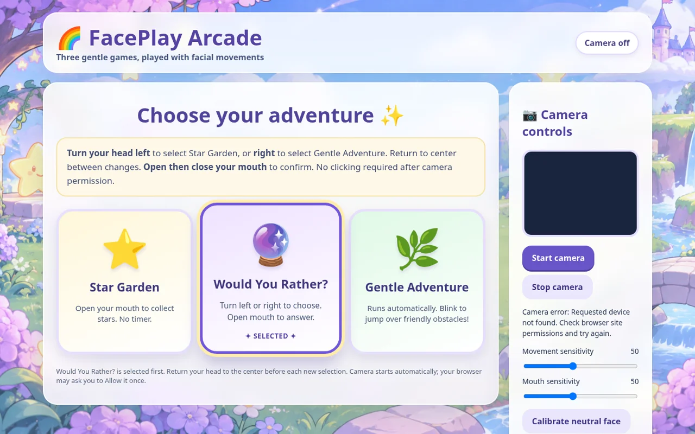
Screenshot · 22 NovThe two music clips have sound; play them with the controls further down. Ten projects were submitted in all; all ten are here, with what you can try without a camera.
Anand had set the tone at the very start: “because this is a workshop and not a classroom, you're going to be doing the work, not me.” 02:28 About forty-five minutes later the students started building. When the recording resumes, he checks something with a show of hands.
“Okay, the majority of you have not used gesture-based controls, and it's the first time that you're using that. Okay, that that's particularly impressive, because I did not think that's what most of you would go for.”
Anand, after the build hour 49:00
The interesting thing is not that a webcam can track a hand. MediaPipe-style trackers have done that for years. The interesting thing is that the same handful of signals, a pinch, a tilt, a blink, a smile, became a spell in one app, a pipette in another and a piano key in a third. The detector was the same; the machine around it was not. That is what this page is about: how a room got there, what they built, and what is still worth learning once building is this cheap.

The workshop on one page
Guess, test, build, then ask what's left
A comic summary of the session. Click to open it full size. The story below follows the same arc, with the evidence behind each panel.
- Guess first. Write down what you believe before you test it.
- Test the edges. Can a text-only model see a picture? Watch a launch? Count bottle caps?
- Let the agent pick the model. A push-up coach built without knowing any pose library.
- Build for an hour. Ten webcam apps, deployed.
- Find what's left. If anyone can build it, where is your edge?
Act I · Rewind: guess before you look
03:05to 07:20
Write down what you think, then test it
Before anyone touched a camera, Anand put up a QR code to a live form and explained why the afternoon would be full of questions. In high school, he said, he read books that felt obvious, and only later realised that a hundred plausible explanations can sound equally right until you check one against reality.
“before you try and learn something, write down what you think you know, and then go ahead, test it out. If it's the same thing that you thought, then, well, you got it right. You've learned something. If it's different, then you've concretely learned something.”
Anand 03:40
So the form asked the room to commit to answers about what today's AI models can do with images, and only then showed the evidence. This page asks you to do the same. Each purple box is a real question from the workshop form; pick an answer and you will see how the 15 people who answered it voted. The survey ran in sequence on the same form, so it shows what the room believed at each step, not a before-and-after learning effect.
07:23to 19:15
Can a model read a picture it can't see?
The first real question was deliberately strange. Forget the vision features of ChatGPT. Take a tiny black-and-white image, write its file out as text, and paste the text into a language model with no tools and no vision. Can it work out what the picture is, in its head?
Two-thirds of the room said no, and so had Anand. “That's exactly what I thought,” 09:55 he said, and he had asked a colleague, Atharva, to test it. The experiment, now published as Can a model read a picture it can't see?, uses seven 8×8 images: a 1, a 7, a cross, a circle, and three blocks of random noise that nobody could guess. Each is stored five ways, from a plain grid of 0s and 1s to a compressed PNG written out in base64. This is literally what the models received for the 7:
The picture: a 7, 8 × 8 pixels.
01111110 00000110 00000100 00000100 00001000 00001000 00011000 00010000UDQKOCA4Cn4GBAQICBgQUDUKOCA4CjI1NQr/AAAAAAAA////////AAD///////8A/////////wD///////8A/////////wD///////8AAP///////wD/////Qk1eAAAAAAAAAD4AAAAoAAAACAAAAAgAAAABAAEAAAAAACAAAADEDgAAxA4AAAIAAAACAAAAAAAAAP///wDvAAAA5wAAAPcAAAD3AAAA+wAAAPsAAAD5AAAAgQAAAA==iVBORw0KGgoAAAANSUhEUgAAAAgAAAAIAQAAAADsdIMmAAAAGElEQVR4nGNoZPjJxMTEwPSHiYHpAxMHAB5qA32rRw2yAAAAAElFTkSuQmCCTo score, a model had to write out all 64 pixels; an image counted only if every pixel was right. The PNG is the hard one: its pixels are compressed, so the model must decompress them step by step in its reasoning.
| Text grid | PBM | PGM | BMP | PNG | |
|---|---|---|---|---|---|
| GPT-6 Solmedium effort | 7/7 | 7/7 | 7/7 | 7/7 | 7/74 of them black/white inverted |
| Claude Sonnet 5.5high effort | 7/7 | 7/7 | 7/7 | 7/7 | 5/72 wrong |
| GPT-6 Lunahigh effort | 7/7 | 7/7 | 5/7 | 3/7 | 2/73 ran out of tokens |
| Gemini 3.8 Flashlow effort | 7/7 | 6/7 | 2/7 | 4/7 | 0/7 |
| GPT-6 Lunareasoning off · 4 images | 4/4 | 0/4 | 0/4 | 0/4 | 0/4 |
Source: Atharva's published results, Can a model read a picture it can't see? (checked 22 Nov) · code and data · every raw model reply. The whole experiment took 218 logged model calls and cost $2.41.
The room was wrong, and so was Anand. The strongest model, GPT-6 Sol, rebuilt every image in every format. That is genuinely surprising, and the details are what make it a lesson rather than a magic trick:
- The perfect PNG score includes inverted images. Four of GPT-6 Sol's seven PNG answers had every pixel right but black and white swapped, and the experiment counts those as decoded. Quote “7 of 7” only with that footnote.
- Reasoning is the whole difference. With its reasoning switched off, GPT-6 Luna decoded none of the encoded files. With reasoning on, it decoded about two-thirds of all the images.
- Decoding is not recognising. GPT-6 Luna rebuilt the cross pixel-perfectly, then described it as “a white diamond”.
- It is not a better way to send pictures. Decoding one tiny PNG took GPT-6 Sol and Claude Sonnet 5.5 about 45 seconds and 4–7 US cents each. Attaching an image to a vision model is far cheaper and more reliable.
“They read the PNG compression almost like they read English, which means that if I tossed it an EXE file, they don't need to run it someday.”
Anand 12:25
The model names said in the room don't match the published results. In the recording, Anand reads out Llama, GPT-4o and Sonnet 3.5. Atharva's results page (checked 22 Nov) tested GPT-6 Sol, Claude Sonnet 5.5, GPT-6 Luna and Gemini 3.8 Flash, as in the table in this section. Both agree that every model read the plain 0s-and-1s grid perfectly. For names and scores, rely on the results page.
The models were not given multiple-choice options. When a student asked how the prompt worked, Anand guessed it might offer options, then checked the raw replies live 20:46. The prompt asked each model to rebuild the pixel grid and say what the picture shows.
Anand used the surprise to explain how an LLM works at all. He started in a Google Sheet. Type a row of numbers. A neuron is just a cell that adds those numbers up, giving each one its own weight (“only look at this one, this one, 50% of this, 20% of this”), and passes the total to the next layer of neurons. An LLM is billions of these. Training means finding the weights.
One neuron, as a spreadsheet
The inputs Anand typed, with weights like the ones he described. Drag a weight to see the neuron's output change.
| Ainput | Bweight | C= A × B | |
|---|---|---|---|
| Σ | Neuron output (sum of column C) | ||
Then, how does a network of neurons talk? It turns the words so far into numbers, runs them through the network, and gets back a probability for every possible next word. It picks one, adds it to the text, and goes again. Anand showed this with his LLM hallucination visualiser and a trick question: “In what episode of Friends did Joey eat too many marshmallows?” 17:32
GPT-3.5 answers a question about an episode that doesn't exist
Each chunk is one word-piece the model picked. Stronger colour means the model was more sure of it; a dashed outline means it was under 60% sure. Tap any chunk to see the other words it considered.
Q: In what episode of Friends did Joey eat too many marshmallows?
The fork Anand pointed at was the season number: “it wants to say three, but it also feels maybe it was in season seven.” A few words later, “Episode 20” won with only 45%, with 21 a distant second. His honest summary of why the same machinery can read PNG: “how would they have learned how to speak PNG? And yet they seem to have learned how to speak PNG.” 18:52
21:16to 26:20
A video is a stack of pictures. Can a model watch one?
Next question: can an LLM-based model recognise what's happening in a video? Not with a tool that runs ffmpeg, Anand stressed, but the model itself, given “stream of images is a perfectly valid interpretation of video.” 21:42
The room flipped. Minutes after most of them said a text model couldn't read an image file, most said a model could follow a video. The questions are different (raw encoded text versus pictures handed to a vision model), so these aren't contradictions. But the switch shows how quickly one surprise moves our sense of the possible.
Most who doubted a text model could read an image file still expected a model to follow video
Each of the 15 survey respondents, traced from their answer on the image question (left) to their answer on the video question (right). Ribbon width = number of people.
Source: workshop form, last answer per person, 15 matched respondents. Anonymised aggregate.
Anand showed what a colleague had done with an American football broadcast: a fast model watching the match and posting what was happening in a corner of the screen. That demo is internal, so it isn't linked here. A public experiment by Atharva, Can a model watch a broadcast?, tests the same idea on a rocket launch. It takes one frame every 5 seconds from 5½ minutes of the James Webb Space Telescope launch broadcast and asks a vision model the same 19 questions about each frame. 23:47
Rocket-launch experiment: reading the screen works, following the rocket doesn't yetShare of the model's answers that matched a person's labels, by type of question.
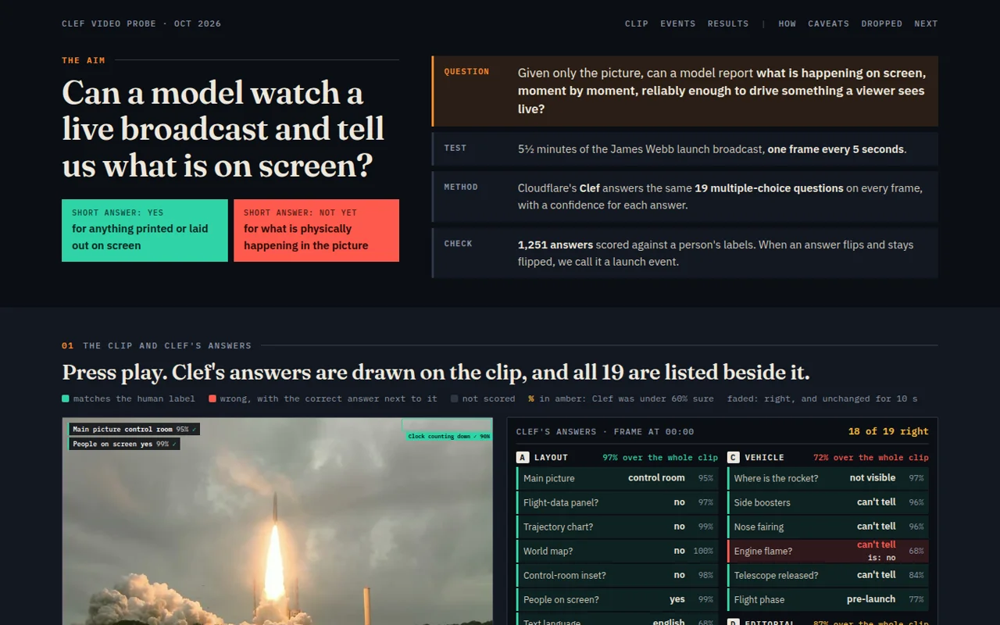
Another colleague, Sujal, built the Content DNA Analyzer, which scores a video against audience-retention and reach criteria, with timestamped evidence; Anand demonstrated it on a Super Bowl commercial. 24:50 Then he said what all three video demos meant for the students:
“That's your role, really: knowing what's possible, when it doesn't work figuring out whether you can make it happen, or figuring out if you should just wait for some time before the models and the systems get smarter.”
Anand 25:58
26:37to 30:27
Do specialised models still matter?
Big general models now read encoded pixels and follow broadcasts. So does anyone still need a specialised model like YOLO? Anand narrowed it to one task: counting.
Another colleague photographed stamps on a desk, books on a shelf and a pile of bottle caps, and gave the photos to nine vision LLMs and five specialised counting models. 28:15 The benchmark's results page, as checked on 22 Nov, has 54 LLM answers and 30 specialist predictions on six photos.
In this counting benchmark, the best counter was a specialist model, but only just
Average error: how far each model's count was from the true count, as a percentage, averaged over six photos. Lower is better.
Source: the benchmark's results page, Count Compare: models and insights (checked 22 Nov). Caveats from that page: three of the six photos come from a dataset (FSC-147) some specialist models were trained on; FamNet is also shown example objects; YOLO-World-S detected nothing at its saved confidence cutoff, so it scores 100% error. See also the story and every prediction.
CountGD was off by 3.7% on average; the best LLM, Gemini 3.8 Flash, by 4.5%. The other eight LLMs were off by between 9% and 62%. The LLMs' stated confidence wasn't a guide either: of 12 answers where an LLM said it was at least 90% sure, 8 were wrong. Six photos can't rank models in general: on just the three photos outside the specialists' training data, CountGD++ comes first instead. But the result fits what the room guessed:
“I think we are at that stage where there is still a place for specialized models.”
Anand 29:46
The published results say nearly the opposite of what Anand recalled in the room. Speaking from memory, he described CountGD as doing poorly and YOLO-World as “doing extremely well”. 29:12 The benchmark's results page (checked 22 Nov) has CountGD best across all six photos and YOLO-World-S detecting nothing. Rely on the results page.
He added a twist that matters for the next question. Specialised models aren't improving as fast as general ones, but “these days the way in which people are improving the specialized models is by telling a generalized model, they just go to ChatGPT and say, ‘Look, somebody built this model. Here is my problem. Can you improve the model?’” 29:56
30:27to 31:49
So who should pick and tune the model?
If specialised models still matter, someone has to choose one and optimise it. Should you learn the landscape of vision models and the techniques for tuning them, or let a coding agent do it? “there is no right or wrong answer on this one,” Anand said. 31:10
A clear majority said humans. The form adds a twist: of the ten students who later submitted a working project, nine answered this question, and seven of those nine had said humans need to pick and optimise the models themselves. An hour later, those same students shipped computer vision apps without choosing a tracker by hand. (We don't know which libraries each app used or whether anyone changed their mind; the form didn't ask.)
“The first person who does not know how to build a model is me. I have never built a computer vision model ever. And here I am, conducting a computer vision workshop right here”
Anand 31:59
32:17to 37:10
The push-up coach nobody specified
His evidence was his own push-ups. A first video went to ChatGPT, which drew his skeleton and “gave me a very generous 71.” 32:51 Only his upper body was moving. Then he gave Claude Code a goal, not a method. These are the actual prompts:
I want to identify the quality of my push-ups.
I want to find the best library, tool, technique, approach, ... to do this.
I want the output as a single HTML page that shows the quality score of each push-up and the overall score across push-ups for each of the videos, with a visual annotation that proves the score.
…
I would also like a comparison of the approaches you used - so I should be able to toggle between the different approaches in the HTML file and see the differences in the results as well as the quality of the results.
Read every prompt, including “Crashed again! Heated up, I guess. Continue, carefully.” ↗
The agent tried RTMPose, ViTPose, a YOLO pose model and MediaPipe, plus two Gemini models, compared them, and proposed an ensemble that takes the median. 35:26 The result is the Push-up Form Lab, which draws the angles on every rep so you can check each score yourself.
Push-up form score by session, out of 100Scored by the ensemble of pose models, which found 230 push-ups across the four videos.
The uncomfortable part is the last day. The ensemble found 230 reps over four sessions. Depth scored 100/100 throughout; body line was the weakest at 39/100. He fixed the sag and then overcorrected into a pike, so the score fell to 67. That's not “AI coaching made me better”; it's a measurement that caught a new mistake. And it is a composite rubric over 2D angles, not a physiotherapist's diagnosis. While the main agent worked, a second agent reviewing the run flagged exactly that:
“2D angles shift if the camera sits at a slightly different height, distance or tilt each day. … So a better score may be real, or partly a measurement change.”
Anand replied in the prompt log that he had consciously improved his form after the first session. Both can be true. Here is what he took from it:
“I didn't really need to know what library to use or what technique to use. It can figure that out. Second: it seems to be able to create a benchmark and verify it on my behalf.”
Anand 36:30
The third lesson: it had done the optimisation too, finding a combination of libraries better than any single one. That answers the question the room had just voted on, about who should pick and optimise models, and the answer came from a person who has never built a vision model, with the evidence drawn on every frame so he could check it.
37:11to 41:05
From analysing a camera to playing with one
Everything so far watched a video. The next demo turned the camera into an input. Sujal, who built the Content DNA Analyzer, had also built a pottery wheel you shape with your hands: open both hands to choose a height, make fists and move them apart or together to change the radius. Anand tried it live. “Okay. Maybe that didn't work. Yeah, now it's working.” 38:40
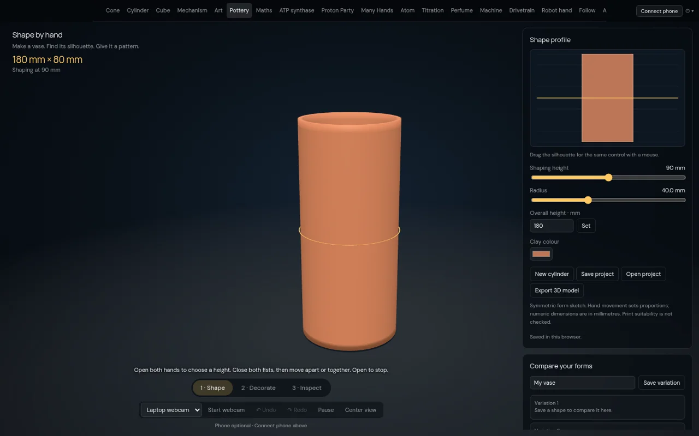
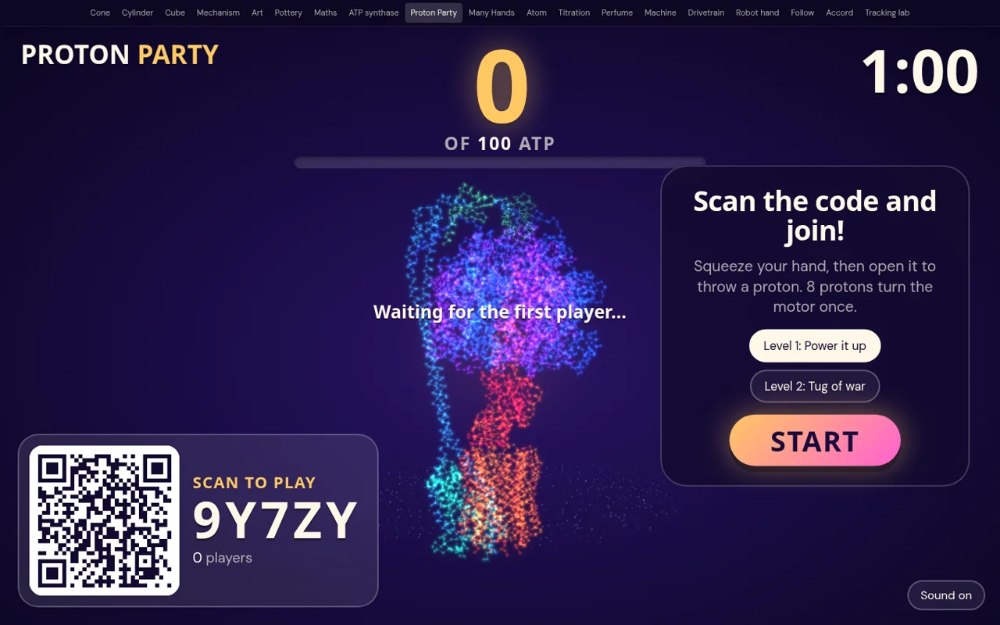
“Again, identification was his, or its, the agent's. The conceptualization was his. That's the role the human was playing.”
Anand on the pottery demo 38:47
How did Sujal build it? “I asked him, ‘Hey, how did you do this? What libraries did you use?’ He said, ‘I have no idea.’” 40:40 He'd have to read the code. Anand compared it to Anthropic's own team saying no single person understands all of Claude Code; when they need to, they ask it for an explainer.
41:07to 48:23
If agents do the data science, what do you learn?
Nobody picked “doing data science”. Anand had given a talk the year before called RIP Data Scientists, 42:19 so he was glad. The room split evenly between verification and finding problems; he promised his own answer later (it's further down, and it isn't either of those).
Then the brief. Pick something ambitious, he said; the win is leaving with “Damn, I didn't even know this was possible.” 43:50 And a warning about where the difficulty would be:
“A big part of what enables it is, are you giving the agent the right kind of tools?”
Anand 43:29
The suggestions were a sign-language tutorial, a gesture instrument, or a webcam “video studio”: “Could you have, I don't know, Barack Obama walking behind you? Could you place yourself inside an aquarium?” 47:06 The one rule: deploy it as a static web page, on GitHub Pages or anywhere, so it becomes part of a portfolio. Why a portfolio? Because of an earlier question on the form.
Anand agreed with the majority. Grades matter for a master's admission, not for a job. Interpersonal skills matter, but in his experience “there is an interesting negative correlation between interpersonal skills and the ability to get stuff done.” 45:21 And outcomes are hard to check:
“Somebody says, ‘I saved a client,’ or, ‘I was doing an internship and we saved them $85 million.’ Who am I going to call? I can see the portfolio of work.”
Anand 46:00
48:23 → 48:37 in the recording · about an hour in the room
“I'm also going to build something. Why should you have all the fun?”
Anand, as the build hour began 48:20. The recorder was paused for roughly an hour while students built and Anand and the volunteers walked the room; it resumes at 48:37. In the transcript this hour is the single line [WORKSHOP-BREAK]. The form shows the first project link arriving at 15:41 and the last edit at 16:30, Singapore time.
Act II · Ten webcams, ten machines
48:37to 49:40
What came back from the hour
Ten students submitted working links. Not one is a sign-language tutor, the “simplest” suggestion. Instead: a spell chamber, a lunar chemistry lab, a desert motorbike, a rhythm game with an anime avatar, a piano-guitar-flute, a conducting app, three face-controlled games, a pet cat, a gesture collector and an emotion tracker. Anand's reaction when the recording resumes:
“In what, less than an hour, at least well more than half a dozen of you, you've created something that works, in many cases works well, that's based on gestures, through your camera, and have deployed it for the entire world to be able to use your application. Clearly powerful.”
Anand 49:14
I opened all ten on 22 Nov, the day after, and played with them as a visitor would. I did not grant camera access, so everything below tests the apps' own camera-free controls, not their tracking accuracy. Screenshots and clips show the sites as they were on 22 Nov; students may have changed them after the room saw them. What struck me first is how much they share underneath.
The common pipeline
Camera → landmarks → a gesture → an action
Every project runs the same four steps in the browser. A tracker (several use MediaPipe-style hand or face models) turns each frame into points: 21 per hand, several hundred on a face. Code turns the points into a signal: a pinch, a tilt, a blink. The last step, what the signal does, is where the ten apps stop looking alike. Descriptions are from each app's own instructions.
Explorable · a recreation, not a student's app
A pinch is a number crossing a line
Drag the slider (or hold the button) to close the gap between landmark 4, the thumb tip, and landmark 8, the index tip. Then switch on camera noise and park the slider near the line. A naïve rule fires a burst of pinches from one wobbly hand; a rule with two thresholds and a short hold fires once. That tiny design choice decides whether a spell casts once or ten times.
Hand open. No pinch.
The thresholds here are illustrative. Each student app makes its own choices; I didn't inspect their code.
Conjure
A grammar of spells
Spellglass · a Frieren-inspired spell chamberNot a classifier, a vocabulary
Most gesture demos recognise a sign and print its name. Spellglass builds a grammar. An open palm held still for half a second is Moon Ward; one pinch is Star Bloom; a sideways swipe is Gale Ribbon. Cast two different spells within three seconds and they fuse: Moon Ward + Star Bloom makes Astral Aegis, Star Bloom + Gale Ribbon makes Cometstorm.
Two hands go further. Pinch with both, then spread them to grow a 3D orb, tilt the line between them to turn it, push toward the camera to bring it forward, and release while moving to throw it. Hold both palms open for a second first and the throw is charged, leaving a golden trail.
Try without a camera: click Moon Ward, then Star Bloom within three seconds. Then try Preview charge followed by Preview toward.
Open Spellglass camera-free previews
The design choices are timing choices: a half-second hold to avoid accidental palms, a three-second window for combos, motion at release to tell a throw from a dissolve. I tested the previews, not the live recognition.
Experiment
A game that makes you predict first
Air Chemistry Lab · lunar outpostPredict, pour, compare with a control
Air Chemistry Lab puts you in charge of a lab bench on the Moon. Mission one: pour vinegar, water and baking-soda solution into three cups of red-cabbage indicator. They turn pink, blue-purple and blue-green, and the log explains why: acidity changes the pigment's form.
Mission two is where it gets clever. Before you can pour, it makes you predict which gas the reaction will release. Then you test vinegar on baking soda against a water control. I deliberately guessed oxygen; after both tests the app asked me again, from the evidence, which gas came off. Guess carbon dioxide and the mission simply completes. Mission three identifies an unknown powder using iodine, a known reference and a negative control.
Try without a camera: Enter the lab, click Vinegar then Cup A, Water then Cup B, Baking soda then Cup C. In Find the Fizz, predict the wrong gas on purpose.
Open Air Chemistry Lab mouse, touch, keyboard
NoticeThis is the same loop Anand opened the workshop with, “write down what you think you know, and then go ahead, test it out”, here as a game mechanic, with a control experiment added. The gestures are only the means. The design is in the mission.
Ride and play
Four games, four bodies as controllers
Four projects are games, and each one asks a different part of you to be the joystick. The interesting differences are not in the tracking but in what each designer chose to forgive.
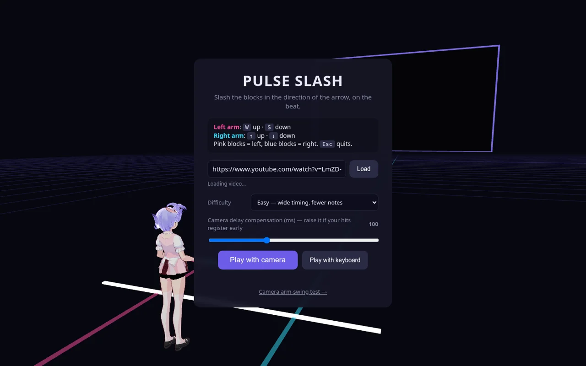
Pulse Slash is the one that treats latency as part of correctness. In most apps a tenth of a second of delay is invisible; in a rhythm game it decides whether you hit or miss, so the designer exposed it as a setting. The two face-controlled games take the opposite stance: slow, forgiving, no timer.
Mochi's Mood-Ring ArcadeA cat that mirrors your face
Mochi is a cartoon cat whose mood follows your expression. Smile and it beams, with a toast: “That smile is adorable!” Frown and it looks sad and offers “a virtual hug”. Three mini-games use different signals: move your head to catch falling snacks, blink to jump cacti, hold a smile for 15 seconds to unlock outfits.
Its tagline is “Your pet feels what you feel.” What it can actually see is your expression; a smile you hold for 15 seconds to unlock a hat is not necessarily happiness. The keyboard mode makes that obvious, and is also a thoughtful touch: you can play with no camera at all.
Try without a camera: choose “Play with keyboard”, hold S, then open Blink Jumper and press Start.
Open Mochi keyboard mode

FacePlay ArcadeNo clicking required
FacePlay has three gentle games played entirely with the face. Turn your head left or right to choose, return to centre between choices, and open then close your mouth to confirm. In Star Garden you open your mouth to collect stars, with no timer. In Gentle Adventure you blink to jump.
The details are the design: a neutral-face calibration that runs automatically, separate sensitivity sliders for movement and mouth, and “return to centre” so a single head turn can't select twice. It needs a camera; there's no keyboard path into the games.
Try with a camera: start the camera, keep still for a moment while it calibrates, then turn your head and open your mouth to pick Would You Rather.
Open FacePlay camera only
Games you can play without hands could matter a great deal to some players. Whether these do is something only those players can say; nobody has tested that yet.
Make music
Two instruments, two theories of music
Two students built instruments, and they disagree about what an instrument is. Airwave turns motion into discrete events: this note, now. HandSymphony turns motion into continuous expression: you never pick a note; you shape how the music feels, and it only plays notes that fit the key, so you can't play a wrong one. Both clips below have sound.
Both apps solved the same practical problem: a visitor without a camera can still play, Airwave with the keyboard and HandSymphony with a pointer. HandSymphony also does something few demos bother with: a plain-language glossary of tempo, dynamics, chords and arpeggios, for people who “don't need to know any music”.
Try without a camera: on Airwave press A A G G H H G. On HandSymphony, choose “Start with pointer”, switch the genre to Jazz, and sway slowly.
Read the body
The two that try to name what they see
The last two projects don't use the signal to control something. They try to label it, which is where the honest ones start writing caveats.

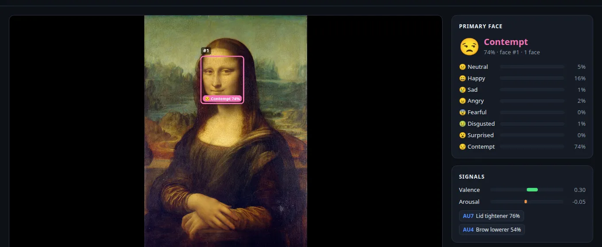
Emotion TrackerThe most famous smile reads as contempt
The Emotion Tracker scores eight expressions and two signals, valence and arousal, against your neutral face, which you calibrate by relaxing for 2.5 seconds. You can then teach it any expression it gets wrong. Its page includes the most thorough design notes of the ten: why version one missed subtle sadness (a ~330 KB model trained on posed photos, data dominated by neutral and happy faces, a crude per-frame decision rule) and what replaced it.
I tried it on Leonardo's Mona Lisa. Contempt, 74%. Happy, 16%. Valence slightly positive. Without a neutral baseline for her face, that is exactly the kind of answer the app's own design notes warn about, and a reminder of what any such tool measures: muscle movements, not feelings.
Try without a camera: click “Open image / video” and give it a painting or a photo you have rights to use.
Open Emotion Tracker image or video file

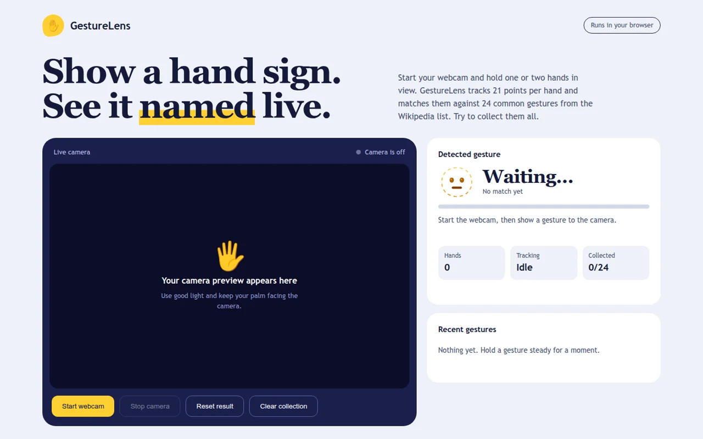
GestureLensGotta catch all 24
GestureLens tracks 21 points per hand and matches them by rule against 24 common gestures from Wikipedia's list: thumbs up, Vulcan salute, OK, heart hands, and a “Rude” filter for the obvious one. Hold a gesture steady and it's added to your collection.
It is careful about its own limits: recognition is heuristic, lighting and angle change results, and meanings vary across cultures. It is a gesture collector, not a sign-language interpreter. Turning it into the sign-language tutor Anand suggested would need a different kind of evidence: signers testing it.
Open GestureLens camera only
Not a student project
Meanwhile, the instructor's own build
Anand did build something, as promised. He spent part of the hour on Lightwell Camera Studio, a camera compositor he had started the day before: it layers drawings, effects and your camera into a virtual camera you can use in a video call, the “video studio” idea from his own list. His commits during the session add layer effects and hand-gesture inputs. Its call integration is marked experimental.
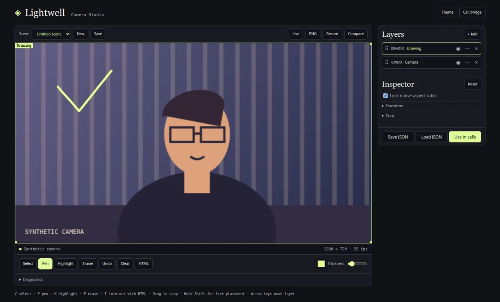
All ten submitted projects · checked 22 Nov · grouped by use, not ranked
Open one. Seven work without a camera.
Every app below asks for camera permission itself, only when you press its start button. Nothing on this page turns on your camera.
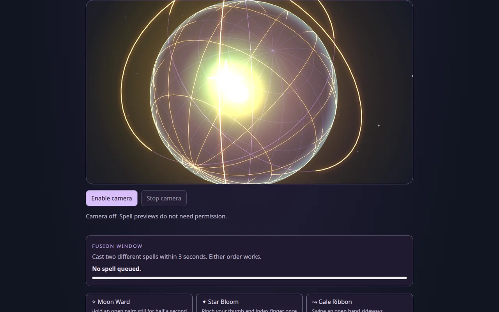
SpellglassCast, fuse and throw spells.No camera: click spell cards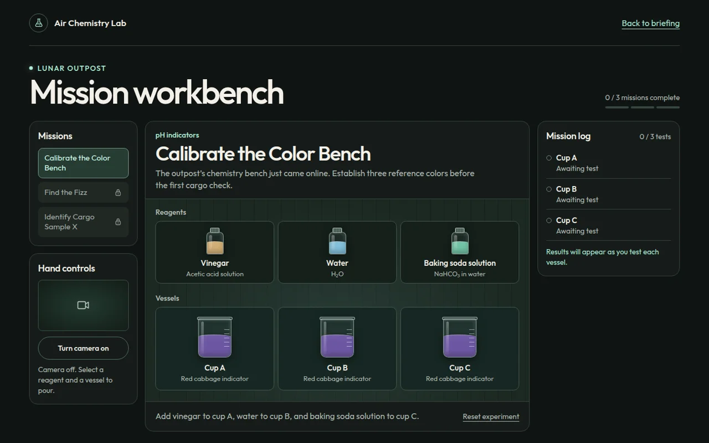
Air Chemistry LabThree experiments on the Moon.No camera: mouse or keys DustlineRide a desert motorbike.Camera only Pulse SlashSlash blocks on the beat.No camera: W S ↑ ↓ FacePlay ArcadeGentle games with your face.Camera only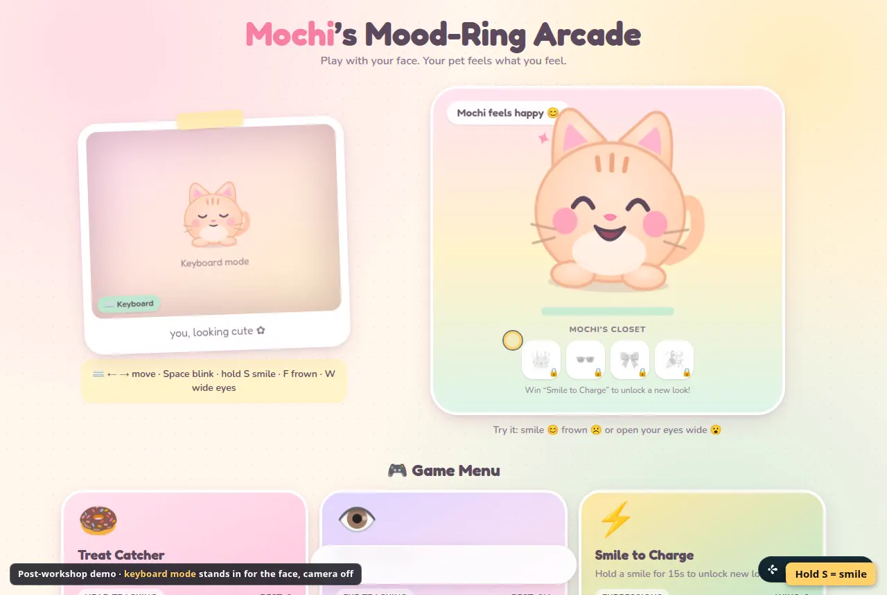
MochiA cat that mirrors your face.No camera: keyboard mode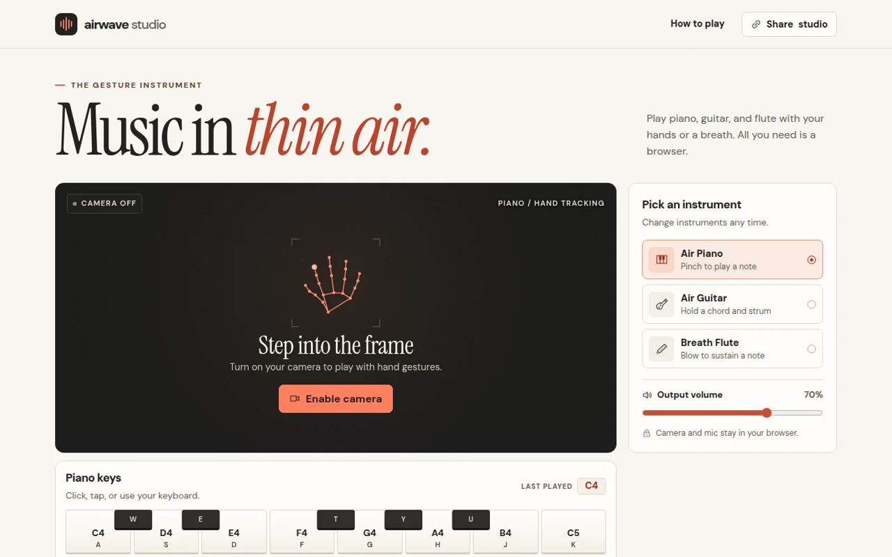
Airwave StudioPiano, guitar and flute in the air.No camera: A–K keys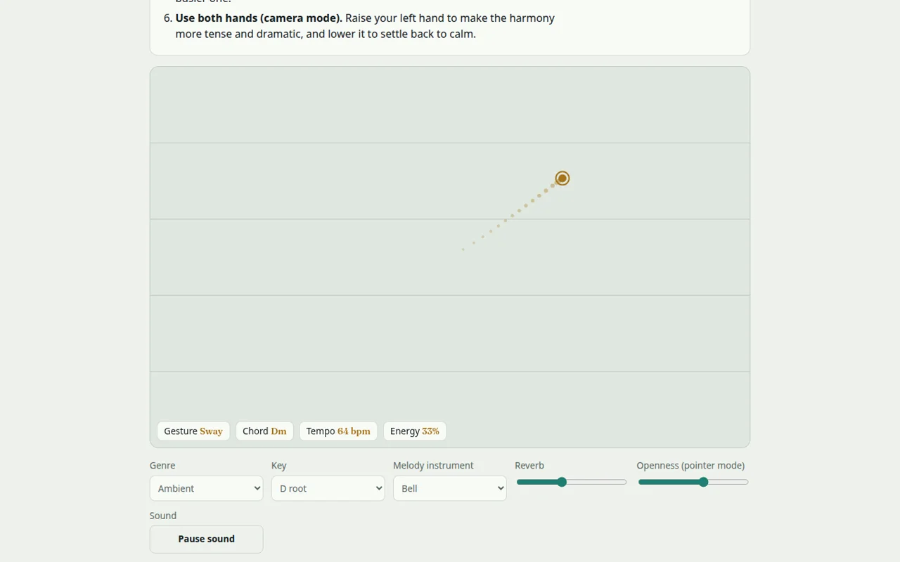
HandSymphonyConduct a soundscape.No camera: pointer mode GestureLensCollect 24 hand gestures.Camera only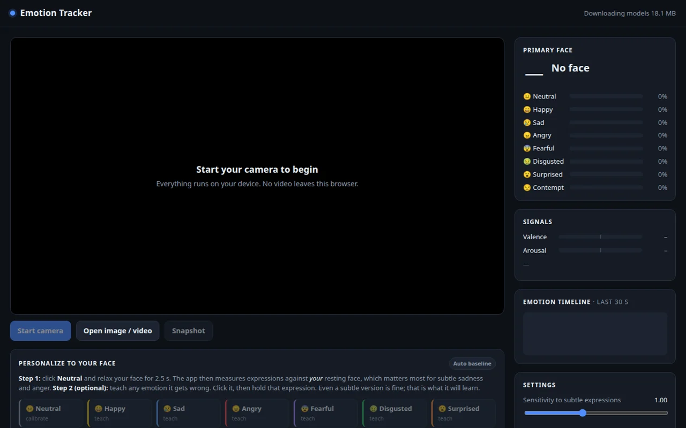
Emotion TrackerExpressions against your neutral face.No camera: open an imageSix design lessons from ten apps
Same detector, different decisions
Put the ten side by side and the computer vision almost disappears. What's left are human decisions about meaning, timing and forgiveness. These are lessons I'd draw from using them, not verified claims about their code:
Act III · If anyone can build it
49:39to 50:50
“That is not your differentiation”
Having praised the room, Anand turned the praise around.
“Now, what that means is, if you can do that in less than an hour, anyone can do that in less than an hour. That is not your differentiation.”
Anand 49:39
So where is it? He pointed at the parts of the hour that didn't go smoothly: “The differentiation is, what is it that we failed today? So, I wasn't able to use some of these gestures. I was struggling. Some of them worked well, and you were iterating to see if it was working well for you, not working well for you. That is something that maybe everyone can't do. Some of you thought of some really creative uses.” 49:47
Look back at the ten apps with that lens. The tracking came free. What separates them is the struggle with use: Spellglass's half-second hold, FacePlay's return-to-centre, Pulse Slash's delay slider, the chemistry lab's prediction step, Emotion Tracker's honest notes on why version one failed. Those look like the traces of someone noticing what fails and designing around it. That's the part worth putting in a portfolio.
“delegate everything to agents. Let them do what they can do well. What they can't do well is the space we play in.”
Anand 50:14
The last question on the form: what did you learn today? · 11 answers
In their words, including the dissent
Anonymous answers, quoted as written. These are students' own observations, not measured results.
“I realised CV already has solutions for almost any kind of standard problems. The problem lies in finding an actual use case thats truly beneficial.”
Student“I didn't know it was possible to make a website in such a short time. I found out that user design is still a limitation with AI. Human won't always be logical, so I need to make a better design to communicate with human.”
Student“Agents are a limitation to developing truly comerically viable software products”
Student · the strongest dissent“I didn't know computer vision can be so easily vibe coded as well”
Student“Even free AI models accessible to public are able to integrate Computer Vision mostly effectively into a html/app file”
Student“Now I see how AI has been getting more and more powerful being able to complete projects fully with almost no serious bugs. As I saw the project files, I realized that human verification is unfeasible, so we need to focus on governance of the creation process. […]”
StudentThe dissent deserves to be taken seriously rather than answered. A working demo is not a commercially viable product, and nothing in this workshop measured viability. The student who wrote that user design is still a limitation is pointing at the same gap from the other side: an agent can wire a pinch to a pour in minutes; deciding what a real person will understand, trust and keep using is slower, and it is tested on people. Both answers are about where the hour ended, not where the work does.
51:54to 54:20
Where agents will learn fast, and where they won't
Anand's rule for where the edge moves is simple. Models get good at anything that can be checked: “if you give it an input and any system of intelligence is able to figure out if that input is correct or wrong, they will learn it.” 52:04 Which leaves two kinds of territory:
“how do stars grow? How do plants grow? How do humans or businesses react to strategy? These things take years to experiment. Or where there's no such thing as a right answer—will this painting be appreciated by people?”
Anand 52:27
Answers that are slow to get, and answers that are subjective. Whether a gesture feels right to a stranger is the second kind. Whether the pose model measured your hip angle correctly is closer to the first kind, and the push-up log shows what to do about it: set things up so an agent can do the checking, the way a second agent in the push-up project flagged camera position as a possible cause of the score changes.
“What seems to be emerging is governance. How do I set up stuff so that agents can do the verification?”
Anand 53:34
He then gave his own answers to the questions on the form. Here they are next to the room's answers:
| Question | The room (15 answers) | Anand |
|---|---|---|
| Can a text-only model read an encoded image? | No, 10 · Yes, 5 | Thought no, too. Atharva's experiment says yes, with heavy reasoning and caveats. |
| Can a model recognise what happens in video? | Yes, 11 · No, 4 | Yes: “it's literally seeing the video.” The rocket-launch experiment adds: not yet for what's physically happening. |
| Can LLMs count better than specialists? | No, 9 · Yes, 6 | Agrees: “there is still a place for specialized models.” |
| Who should pick and optimise models? | Humans, 11 · Agents, 4 | The agent did it for his push-ups: chose, benchmarked, combined. |
| What a hirer looks at | Portfolio, 9 · Outcomes, 2 · People skills, 2 · Grades, 0 · Other, 2 | Portfolio. Outcomes would be better, but he can't verify them. |
| What should you learn? | Verification, 6 · Finding problems, 6 · Execution, 1 · Data science, 0 · Other, 2 | Execution on top. Data science: “not worth it”. Verification: governance instead. Finding problems: the creative, niche ones. 52:57 |
“Execution: definitely. That's the big problem. ChatGPT can tell you, here's how you should do your exercise. You've got to do it.”
Anand, whose own push-up scores had been on screen earlier 53:52
Only one person in the room had picked execution. Anand ranked it first. Whether he's right is a judgement, not a measurement, but it fits the evidence on this page: the code took an hour; turning it into something a stranger can use without help is the part still to be done.
50:52to 51:54
A hundred experiments, and the three you show
If you're heading for a job, he said, “you will be competing both with agents, and therefore there's no point learning what agents can do, as well as with people who will be using agents.” 51:02 A portfolio helps, but an hour's work is one tile in it, not the whole wall.
“if you create 100 things, pick what is really suitable for the person you are speaking with and craft custom portfolios, effectively personalizing it to the person you're meeting. That's what gives it power.”
Anand 51:35
A team building applied machine learning might want the Emotion Tracker's design notes. A game studio might want Pulse Slash's latency slider. An education startup might want the chemistry lab's predict-and-control loop. The same hour, curated three ways.
Act IV · Your turn
An exercise for anyone with a laptop
Run the same experiment yourself
You don't need to have been in the room. You need a browser, a coding agent and an afternoon. Tick the steps as you go; your progress stays in this browser only.
Anand ended the workshop the way he started it, with a question he couldn't answer for anyone else. “What would I take away from this workshop if I were you? Actually, I don't know” 54:18 So he asked the room, and the question is yours now:
“what is something that you learned today? It may be something that you didn't even know was possible, or maybe you thought it's possible, but it's actually not.”
Anand 54:46
Takeaways